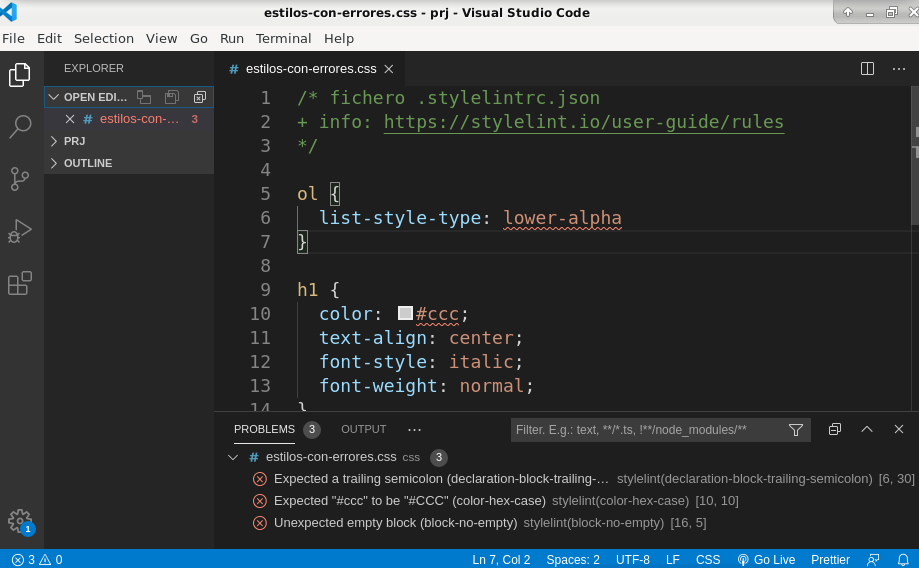

Linter CSS¶
1. Introducción¶
Lint es una herramienta de programación; originalmente lint era el nombre de una herramienta de programación utilizada para detectar código sospechoso, confuso o incompatible entre distintas arquitecturas en programas escritos en C; es decir, errores de programación que escapan al habitual análisis sintáctico que hace el compilador.
Actualmente, lint se utiliza para referirse a las herramientas que analizan programas o documentos en busca de errores sintácticos, de posibles fuentes de errores, o incluso programas que no siguen reglas de estilo.
Es posible que el editor que utilice traiga ya integradas algunas capacidades para detectar errores CSS, indicando por ejemplo propiedades desconocidas o reglas CSS vacías (sin propiedades).
Pero en general además se utilizan herramientas adicionales que amplian esas capacidades como por ejemplo stylelint.
2. stylelint¶
stylelint es un linter CSS que se basa en nodejs y su gestor de paquetes npm. La documentación está disponible en https://stylelint.io/
Por lo tanto debe tener instalados node y npm. Si no:
sudo apt update
sudo apt install node npm
Una vezinstalados:
-
Inicializar el proyecto: Abra la terminal y escriba:
npm init -y -
Instalar el motor Stylelint y la configuración estándar: escriba en la terminal:
npm install --save-dev stylelint stylelint-config-standard -
Crear el archivo
.stylelintrc.jsony añadir este contenidos:{ "extends": "stylelint-config-standard", "rules": { } }
Aviso: si no tiene instalada la última versión de node es posible que la versión de stylelint que se instala por defecto no sea compatible y tendría que instalar versiones inferiores que sean compatibles. Por ejemplo si tiene instalado node versión 18 tendría que ejecutar los siguientes comandos con versiones previas de stylelint:
rm -rf node_modules package-lock.json npm install --save-dev stylelint@16.2.0 npm install --save-dev stylelint-config-standard@36.0.0
Con esta configuración estándar por ejemplo se comprueba que:
- se incluye una familía genérica con
font-family - los selectores se escriben en minúsculas
- no hay reglas CSS vacías
- no hay propiedades que no existen
- no hay selectores desconocidos
- etc.
2.1. Fichero configuración básico¶
La configuración básica del linter se almacena en el fichero .stylelintrc.json. El fichero debe residir en el directorio del proyecto.
Su contenido inicial podría ser:
{
"extends": "stylelint-config-standard",
"rules": {
"color-named": "never",
"selector-class-pattern": null,
"number-max-precision": 2
}
}
Observe que en la sección de reglas:
- Se ha añadido una regla que no está activa por defecto en la configuración estándar que prohibe los nombres de colores.
- Se ha desactivado una regla asignádole el valor null. En este ejemplo la configuración estándar es muy estricta con los nombres de las clases CSS, exige el formato "kebab-case" (ej:
.mi-boton). Si escribe.miBoton(camelCase) o.mi_boton(snake_case) le daría error. - Se ha modificado una regla existente: a veces no desea activar ni desactivar, sino modificar p poner un límite. En este caso se usa
number-max-precisionpara limitar los decimales a 2.
2.2. Usando un editor¶
Para usar desde un editor (vscode o similares) es posible que necesite instalar algún plugin adicional.
El plugin para VsCode es stylelint. Una vez instalado el editor marca el error:
- en el propio código (con subrayados en rojo)
- en la consola de errores.
En la siguiente figura puede observar como en las líneas 4 y 10 se marcan errores y cómo esos errores se muestran en la ventana de "Problems"

2.3. Uso desde la línea de comandos¶
Para usar stylelint desde la línea de comandos basta indicarle la ruta al ejecutable y la ruta a los ficheros a revisar. Como la instalación ha sido local (--save-dev)
$ ./node_modules/.bin/stylelint estilos/estilos-con-errores.css
estilos/estilos-con-errores.css
6:1 ✖ Expected "H3" to be "h3" selector-type-case
7:36 ✖ Expected "#aabbcc" to be "#abc" color-hex-length
11:3 ✖ Unexpected unknown property "text-alig" property-no-unknown
14:9 ✖ Unexpected empty block block-no-empty
18:1 ✖ Unexpected unknown type selector "boton" selector-type-no-unknown
19:13 ✖ Unexpected unit length-zero-no-unit
6 problems (6 errors, 0 warnings)
$
Como resultado nos indica para cada fichero revisado:
- fila y columna
- explicación del error
- y la regla (rule) que genera ese aviso.
Este último campo, el nombre de la regla, nos puede servir para modificar nuestro fichero de configuración o buscar ayuda sobre ese error.
3. Enlaces¶
- Node: https://nodejs.org/es/
- Stylelint: https://stylelint.io/
- Módulo Configuración estándar: https://github.com/stylelint/stylelint-config-standard
- Reglas y ejemplos: https://stylelint.io/user-guide/rules/list
- Plugin Vscode: https://marketplace.visualstudio.com/items?itemName=stylelint.vscode-stylelint
4. Anexos¶
4.1. Desactivando reglas en el código CSS¶
En ocasiones nos puede interesar que el linter no revise algún bloque del código o alguna propiedad CSS. Tiene más información en https://stylelint.io/user-guide/ignore-code
4.1.1. Desactivando el linter en un bloque de código¶
Con un comentario especial (stylelint-disable o stylelint-enable) le indicamos al linter que desabilite/habilite la revisión:
/* stylelint-disable */
nav ul {
border: 1px red solid;
background-color: beige;
list-style-type: none;
padding-left: 0;
}
/* stylelint-enable */
4.1.2. Desactivando alguna regla en un bloque de código¶
Similar al apartado anterior, pero se añade en el comentario una lista con las reglas que quiere desactivar en ese bloque:
/* stylelint-disable no-duplicate-selectors */
nav ul {
border: 1px red solid;
background-color: beige;
list-style-type: none;
padding-left: 0;
}
nav ul {
display: grid;
grid-template-columns: repeat(5, 1fr);
}
/* stylelint-enable no-duplicate-selectors */
4.2. Instalación stylelint en Windows 10¶
- Instalar Node (incluye npm): https://nodejs.org/es/ con opciones por defecto.
-
Comprobar node y npm
C:\Users\IEUser> node -v v18.13.0 C:\Users\IEUser> npm -v 8.19.3 C:\Users\IEUser> -
Instalar stylelint (desde npm)
C:\Users\IEUser> npm install -g stylelint added 172 packages, and audited 173 packages in 11s 27 packages are looking for funding run `npm fund` for details found 0 vulnerabilities npm notice npm notice New major version of npm available! 8.19.3 -> 9.3.1 npm notice Changelog: https://github.com/npm/cli/releases/tag/v9.3.1 npm notice Run npm install -g npm@9.3.1 to update! npm notice C:\Users\IEUser> stylelint --version 14.16.1 C:\Users\IEUser> -
Instalar stylint.config-standard (desde npm)
C:\Users\IEUser> npm install -g stylelint-config-standard added 174 packages, and audited 175 packages in 7s 27 packages are looking for funding run `npm fund` for details found 0 vulnerabilities C:\Users\IEUser> -
Crear fichero configuración en directorio del proyecto
C:\Users\IEUser\Documents\prj>ls -l -rwxrwxr-x+ 1 IEUser None 48 Jan 20 18:52 .stylelintrc.json -rwxrwxr-x+ 1 IEUser None 81 Jan 20 18:54 estilos.css -rwxrwxr-x+ 1 IEUser None 1090 Jan 20 18:47 index.html C:\Users\IEUser\Documents\prj>type .stylelintrc.json { "extends": "stylelint-config-standard" } C:\Users\IEUser\Documents\prj> -
Probar en línea de comandos
C:\Users\IEUser\Documents\prj>stylelint estilos.css estilos.css 1:3 ✖ Expected indentation of 0 spaces indentation 3:5 ✖ Expected "20px 20px" to be "20px" shorthand-property-no-redundant-values 3:5 ✖ Expected indentation of 2 spaces indentation 8:1 ✖ Unexpected missing end-of-source newline no-missing-end-of-source-newline 4 problems (4 errors, 0 warnings) C:\Users\IEUser\Documents\prj> -
Plugin en Vscode: https://marketplace.visualstudio.com/items?itemName=stylelint.vscode-stylelint